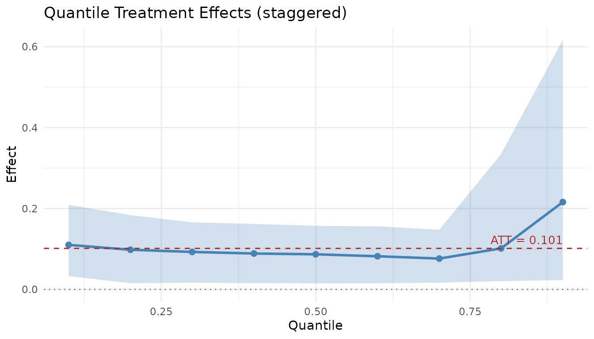

In this vignette, we compare lwdidR and
endid using the “Castle Doctrine” dataset from Cheng and
Hoekstra (2013). States adopted castle doctrine laws in different years
(2005–2009), making this a staggered adoption design.
Data Preparation
We load the data and set up the treatment timing variable
(gvar). States that never adopted the law during the sample
period serve as controls.
library(lwdidR)
library(endid)
#>
#> Attaching package: 'endid'
#> The following object is masked from 'package:lwdidR':
#>
#> apply_transform
library(ggplot2)
set.seed(42)
# Load the Castle Doctrine dataset
castle <- read.csv(system.file("extdata", "castle.csv", package = "lwdidR"))
# Create gvar: first treatment year (NA for never-treated)
castle$gvar <- castle$effyear
castle$gvar[is.na(castle$gvar) | castle$gvar == 0] <- NA
# Time-invariant controls
controls <- c("poverty", "unemployrt", "blackm_15_24", "whitem_15_24")
cat("States by cohort:\n")
#> States by cohort:
print(table(castle$gvar[!duplicated(castle$sid)], useNA = "ifany"))
#>
#> 2005 2006 2007 2008 2009 <NA>
#> 1 13 4 2 1 29Linear Estimation with lwdidR
lwdidR provides a robust, linear estimate of the Average
Treatment Effect on the Treated (ATT) using the staggered design.
fit_lwdid <- lwdid(
data = castle,
y = "lhomicide",
ivar = "sid",
tvar = "year",
gvar = "gvar",
controls = controls,
vce = "hc3"
)
#> Warning in prepare_controls(samp, d, controls): Controls not applied: N1=1,
#> N0=29, K+1=5. Controls ignored.
#> Warning in prepare_controls(samp, d, controls): Controls not applied: N1=1,
#> N0=29, K+1=5. Controls ignored.
#> Warning in prepare_controls(samp, d, controls): Controls not applied: N1=1,
#> N0=29, K+1=5. Controls ignored.
#> Warning in prepare_controls(samp, d, controls): Controls not applied: N1=1,
#> N0=29, K+1=5. Controls ignored.
#> Warning in prepare_controls(samp, d, controls): Controls not applied: N1=1,
#> N0=29, K+1=5. Controls ignored.
#> Warning in prepare_controls(samp, d, controls): Controls not applied: N1=1,
#> N0=29, K+1=5. Controls ignored.
#> Warning in prepare_controls(samp, d, controls): Controls not applied: N1=4,
#> N0=29, K+1=5. Controls ignored.
#> Warning in prepare_controls(samp, d, controls): Controls not applied: N1=4,
#> N0=29, K+1=5. Controls ignored.
#> Warning in prepare_controls(samp, d, controls): Controls not applied: N1=4,
#> N0=29, K+1=5. Controls ignored.
#> Warning in prepare_controls(samp, d, controls): Controls not applied: N1=4,
#> N0=29, K+1=5. Controls ignored.
#> Warning in prepare_controls(samp, d, controls): Controls not applied: N1=2,
#> N0=29, K+1=5. Controls ignored.
#> Warning in prepare_controls(samp, d, controls): Controls not applied: N1=2,
#> N0=29, K+1=5. Controls ignored.
#> Warning in prepare_controls(samp, d, controls): Controls not applied: N1=2,
#> N0=29, K+1=5. Controls ignored.
#> Warning in prepare_controls(samp, d, controls): Controls not applied: N1=1,
#> N0=29, K+1=5. Controls ignored.
#> Warning in prepare_controls(samp, d, controls): Controls not applied: N1=1,
#> N0=29, K+1=5. Controls ignored.
summary(fit_lwdid)
#>
#> Lee-Wooldridge DiD (lwdidR)
#> Design: staggered
#> Transf.: demean
#> VCE: HC3
#> --------------------------------------------------
#> Overall ATT: 0.0917
#> SE: 0.0612
#> t-stat: 1.4997
#> p-value: 0.1402
#> --------------------------------------------------
#>
#> Cohort-specific effects:
#> cohort att se tstat pvalue
#> 2005 0.08017 0.03215 2.493 1.884e-02
#> 2006 0.06824 0.08920 0.765 4.488e-01
#> 2007 0.11406 0.09838 1.159 2.552e-01
#> 2008 0.14605 0.08203 1.780 8.548e-02
#> 2009 0.21108 0.03550 5.946 2.115e-06
#>
#>
#> (g, r)-specific effects (first 10 rows):
#> cohort period event_time att se pvalue
#> 2005 2005 0 -0.13318 0.02826 6.089e-05
#> 2005 2006 1 0.08609 0.03449 1.873e-02
#> 2005 2007 2 0.16398 0.04686 1.580e-03
#> 2005 2008 3 0.13671 0.05067 1.168e-02
#> 2005 2009 4 0.12836 0.04484 7.861e-03
#> 2005 2010 5 0.09904 0.04880 5.200e-02
#> 2006 2006 0 0.05482 0.11626 6.405e-01
#> 2006 2007 1 0.03590 0.18718 8.491e-01
#> 2006 2008 2 0.04571 0.09609 6.375e-01
#> 2006 2009 3 -0.01218 0.09328 8.970e-01Distributional Estimation with endid
endid uses engression to estimate how the law affects
different parts of the homicide rate distribution, aggregating across
all treatment cohorts.
# Reduced epochs and bootstrap for faster rendering
fit_endid <- endid(
data = castle,
y = "lhomicide",
ivar = "sid",
tvar = "year",
gvar = "gvar",
controls = controls,
rolling = "demean",
num_epochs = 500,
nboot = 20,
silent = TRUE
)
#> Warning in endid_staggered(data = data, y = y, ivar = ivar, tvar = tvar, :
#> Cohort 2005: skipping (n_treated=1, n_control=29).
#> Warning in endid_staggered(data = data, y = y, ivar = ivar, tvar = tvar, :
#> Cohort 2009: skipping (n_treated=1, n_control=29).
summary(fit_endid)
#> Engression-Based Distributional DiD
#> Design: staggered | Transformation: demean
#>
#> --- ATT ---
#> Estimate SE CI_Lower CI_Upper
#> 0.1014574 0.05928187 0.04844647 0.2315257
#>
#> --- QTE ---
#> quantile effect se ci_lower ci_upper
#> 0.1 0.11008086 0.06281397 0.03305628 0.2092758
#> 0.2 0.09800152 0.05967277 0.01538266 0.1835884
#> 0.3 0.09267147 0.05131993 0.01656486 0.1659003
#> 0.4 0.08874064 0.04851881 0.01546646 0.1618019
#> 0.5 0.08679277 0.04417654 0.01513210 0.1572755
#> 0.6 0.08197644 0.04180593 0.01519707 0.1559740
#> 0.7 0.07624835 0.04142060 0.01661544 0.1474055
#> 0.8 0.10139028 0.10064137 0.02047468 0.3345670
#> 0.9 0.21599885 0.21765148 0.02326322 0.6167878
#>
#> --- Cohort-level Results ---
#> Cohort ATT SE CI_Lower CI_Upper N_Treated N_Control
#> 2006 0.05176516 0.06147103 -0.04839783 0.1627403 13 29
#> 2007 0.19898443 0.15554471 0.02218221 0.4764322 4 29
#> 2008 0.22940294 0.08525551 0.14186100 0.4148255 2 29Comparing the Results
While lwdidR provides a single point estimate (the
average effect), endid allows us to visualize the
Quantile Treatment Effects (QTE).
plot(fit_endid)
Interpretation
In this example, lwdidR shows the average effect of
castle doctrine laws on log homicide rates. The endid
results complement this by showing how the effect varies across
quantiles of the distribution. This distributional perspective can be
crucial for policy analysis where the impact on the “tails” of the
distribution is as important as the average impact.